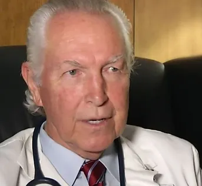

Learn more about our mission, our history, and the legacy of Dr. Harold Potts.
POtt’s Off-Leash Dog Sanctuary was created out of a deep love for dogs and a commitment to providing excellence in canine recreation. As a nonprofit organization, the sanctuary offers a safe, clean, and joyful environment where dogs can play freely while their owners enjoy the natural surroundings.
The sanctuary is not for sale and is currently being legally restructured to remain a permanent fixture in the community. With the help of dedicated volunteers, we work continuously to maintain and improve the facilities for the well-being of both dogs and their humans.
As a private facility with no government funding, Potts Off-Leash Dog Sanctuary relies entirely on community support. Donations and volunteer efforts are essential to keeping the sanctuary open, thriving, and accessible to all. Your involvement—whether through giving, volunteering, or spreading the word—helps sustain this special place.

Dr. Harold Potts, a retired veterinarian, has dedicated his life to serving both animals and people. After earning his DVM from Auburn University, he opened the Ruskin Animal Hospital and Cat Clinic in 1971. His contributions extend far beyond veterinary care.
Dr. Potts founded C.A.R.E. Inc., a rescue and adoption center for dogs and cats, and played a key role in establishing the Mary & Martha House, which provides shelter and support for women and children facing domestic violence and homelessness. He also created Potts Off-Leash Dog Sanctuary, a six-acre park open to the public.
His philanthropy reaches across borders—supporting children in Haiti with meals and education, assisting farmers with resources to grow and sell crops, and contributing to Smile Train, which provides free corrective surgery for children with cleft conditions.
“The more you give generously from the heart, soulfully and without any intention of getting anything in return, it comes back to you many times over.” — Dr. Harold Potts
His lifelong dedication to service continues to inspire the mission and values of the sanctuary.